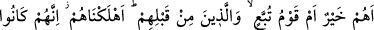
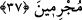

içecek, diğer yarısıyla da bana kefen al, dedi. Ertesi gün öğle vakti bu derviş geldi,
Kâbe’yi tavaf etti. Sonra bir kenara çekilip oracıkta vefat etti. Ben onu yıkayıp
kefenleyip kabre koydum, gözlerini açtı. Ben ona: “Ölümden sonra hayat var mı?”
dedim. O bana: “Ben hayattayım ve Allah’ı seven herkes de diri ve hayattadır” dedi.
Fakîr (Bursevî) derim ki: Bu iki hikâyede bir takım işâretler vardır.
1. Böyle sabırlı dervişlerin Allah katında özel bir mevkîleri vardır. Bu dervişler
kendilerini yedirip giydiren yahut bir şekilde onları sevindirip gönüllerini kazanan
herkese Allah katında şefâat edecek ve şefâatleri de kabul edilecek, Allah’ın izniyle bu
insanların cennete girmelerine vesîle olacaklardır.
2. Peygamberlerin ve velêilerin hayatı gerçekte dâimî bir hayat olup zâhirî ölümle son
bulmaz ve kesintiye uğramaz. Zîra bu ölüm sâdece ruhların bedenden ayrılmasından
ibâret olup zaten peygamberlerin ve velîlerin cesedlerini toprak yiyip çürütmez. Böyle
olunca da bu zatlar ruhlarıyla olduğu gibi bedenleriyle de hayattadırlar.
3. Diriltme işi nisbeten Allah’a en kolay gelen iştir. Rûhun bedenle olan ilk irtibâtını
düşünen kişi, ikinci ve üçüncü defa rûhun bedenle irtibât kurmasında bir tereddüd
yaşamaz.
4. Basîret sâhiblerine nisbetle, ölüdeki hayatın eseri görülüp müşâhede edilir. Bu
zatlar zaman zaman ölülerde bu hayat eserini görür ve onlarla konuşurlar. Basîret ve
gönül gözünden mahrum olup, yalnız beden gözüyle bakanlarda ise inkâr vâkî olur.
Hatta görse bile buna büyü, hayal yahut benzer yakıştırmalarda bulunur. Hz. Îsâ (a.s.)
zamanında ve diğer zamanlarda böyle durumlar vâkî olmuştur. Şu söz ne güzel
söylenmiştir:
Aydınlıkta yed-i beyzâ gibi de olsa bir kimse
Gönlü kararmışların gözünde fecr-i kâzib gibidir
Her şeyden münezzeh olan Allah Teâlâ’dan bizleri hakkaniyetli bir hayat ve irfânî
neşve ehlinden kılmasını dileriz.
37. Onlar mı hayırlı, yoksa Tübba‘ kavmi ve onlardan önce gelen(kavim)ler mi?
Suç işledikleri için biz onların hepsini helâk ettik.
“Onlar mı” yani, Kureyş kâfirleri mi “hayırlı, yoksa” Yemen krallarından biri olan
“Tübba‘ Kavmi mi?” Burada murâd edilen Yemen krallarından biridir. Bu ülke Kureyş
nazarında bilinip tanındığı ve Kureyş’e yakın bir bölgede bulunduğu için özellikle
zikredilmiştir. Bu konuda söylenebilecek şeyler aşağıda gelecektir. Bu ifâdede
kâfirlerin sözlerinin reddi ve kendilerine karşı tehdid vardır. Yani bu hayırlı oluş, din